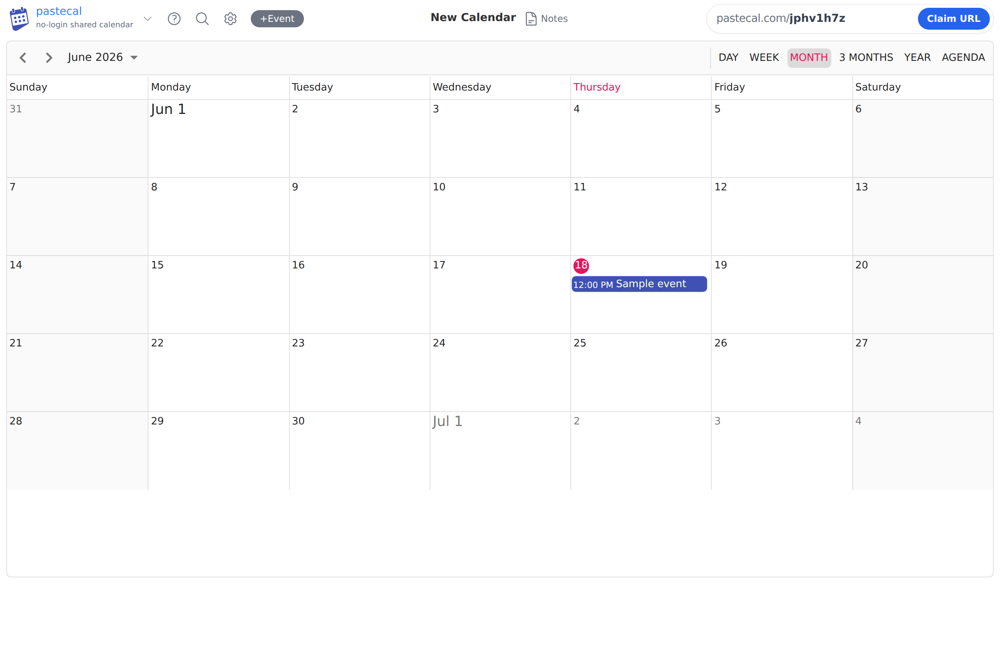
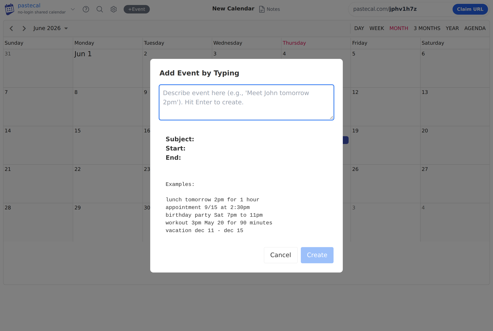
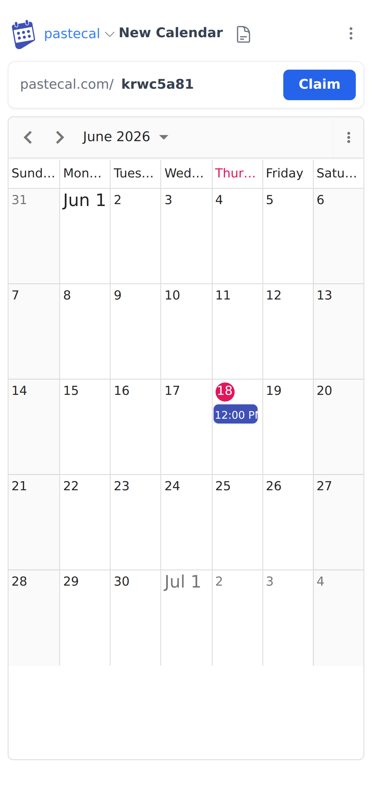
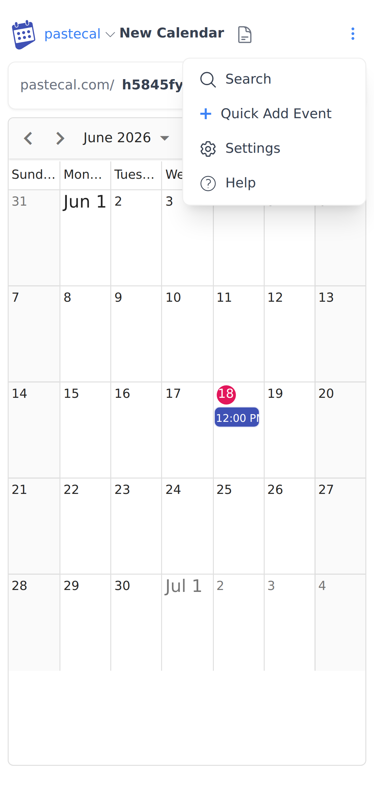
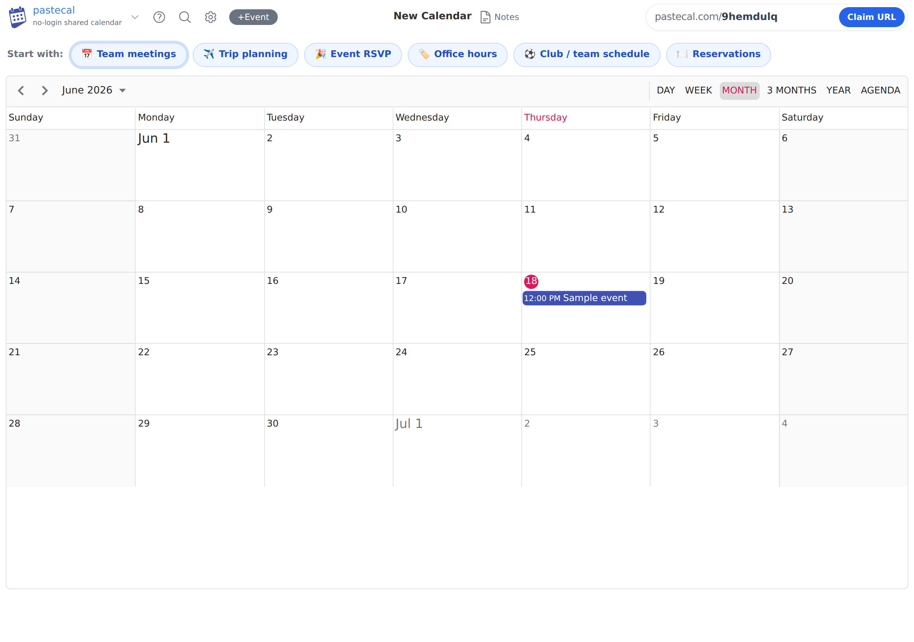

First-run & onboarding, through the lens of "instant start" (Instacalc) — plus a recommendation on quick-start pills.
Bottom line. PasteCal already nails the hardest part of the "no-ceremony" promise: you land in a working, editable calendar with a real URL and a sample event — no login, no setup, no blank page. That is the spirit of a microwave's "quick 30." The gap isn't the engine, it's the visibility of the one-tap action and the blank-scenario problem for first-timers. Two cheap moves close it: (1) make natural-language Quick Add the always-visible primary action, and (2) add a small row of scenario "Start with" pills. Recommendation on pills: Yes — ship a tightly-scoped version.
A microwave's "quick 30" works for two reasons: it does the single most common thing (add 30s) and it needs zero configuration — one press and it's already running. Crucially, a microwave actually ships two kinds of no-ceremony buttons, and PasteCal maps cleanly onto both:
| Microwave | PasteCal equivalent today | State |
|---|---|---|
| "+30s" / Quick Start one button, most-common action, already cooking |
Auto-created calendar + sample event. You arrive at pastecal.com/9hemdulq already editable, with a 12:00 PM "Sample event" placeholder. |
STRONG — keep |
| The "+30s" you press again and again | Natural-language Quick Add — type "lunch tomorrow 2pm" → Enter. This is the truest one-action primitive, but it's hidden behind Cmd+E / a small "+Event" / a mobile kebab. |
UNDER-SURFACED |
| Preset buttons (Popcorn, Beverage, Pizza) | Does not exist yet. No scenario starters on the homepage — this is exactly what "quick pills" would be. | OPPORTUNITY |


Cmd+E or finding "+Event."Strengths: zero-friction entry, immediate working surface, a forgiving sample event, and an honest URL-claim model. Friction: the most powerful "just type it" path is the least discoverable, and the sample event is a small chore to clear. A first-timer with a blank calendar still faces a quiet "now what?" moment.


Cmd+E or a low-contrast "+Event" chip; few will find it.creation_flow.md) is unreachable — there are two create() methods in app.js and the second silently overrides the first, so clicking Claim navigates immediately and the naming nudge never fires.Cheapest, highest-leverage. No new concepts; just promote what exists.
ui-ideas.md). Cleaner start, still educational.Should we have quick pills for common scenarios on the homepage? Yes — as the "preset buttons" layer, scoped tightly. They solve the blank-scenario moment and teach use-cases the hero copy already lists (team schedules, clubs, trips, RSVPs).

/trip-2026 with day/agenda view + a couple of example items).creation_flow.md.| Option | Trade-off |
|---|---|
| Pills that seed templates (recommended) | Best blank-page fix + teaches use-cases + nudges claiming. Slightly more build (needs small templates). |
| Pills that just pre-fill Quick Add text | Cheaper, but lower payoff — still leaves an empty calendar. |
| A full template gallery / modal | More ceremony — exactly what we're trying to avoid. Over-built for a "paste & go" product. |
| Do nothing, only promote Quick Add | Valid & cheapest; solves discoverability but not the "what should I make?" moment. |
| # | Change | Effort | Payoff |
|---|---|---|---|
| 1 | Surface Quick Add as a persistent primary button (desktop + mobile, out of the kebab) | Low | High |
| 2 | Ghost-prompt empty state instead of a deletable sample event | Low | Medium |
| 3 | "Start with" pills that seed a template + suggest a slug (fresh calendars only) | Medium | High |
| 4 | Rotating natural-language placeholder to advertise type-to-add | Low | Medium |
| 5 | Fix the duplicate create() so the "Name your calendar" nudge actually fires | Low | Medium |
Screenshots captured from the live PasteCal app (Vue + Syncfusion) at 1280×860 (desktop) and 390×844 (mobile). References: specs/creation_flow.md, specs/ui-ideas.md, specs/ui-improvements.md, NOTES.md.